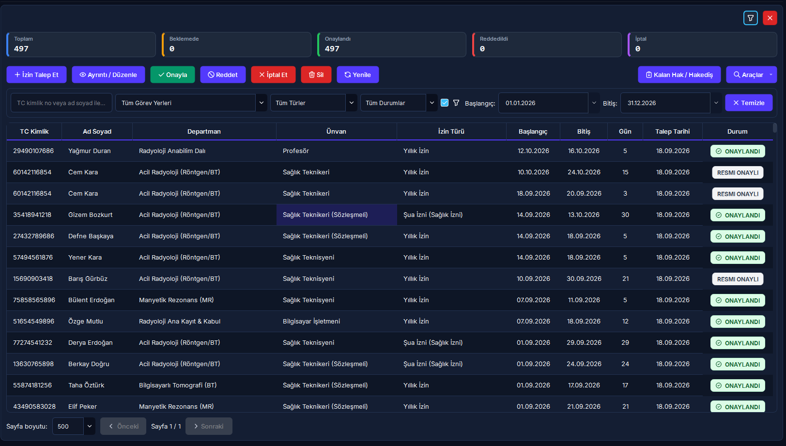
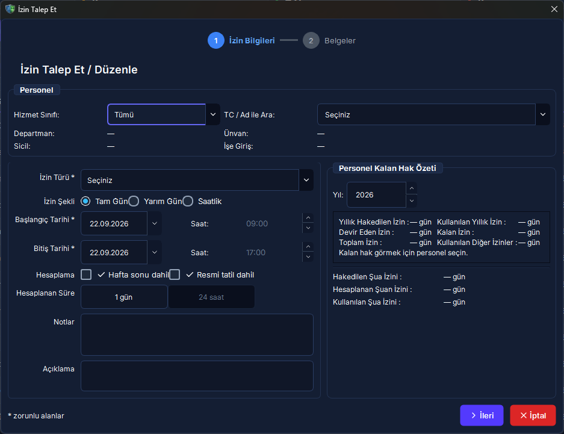

İzin Yönetimi, Şua Hakedişi & İzin Devir Motoru
3153 sayılı Kanun Ek Madde 1 ve 32162 sayılı Yönetmelik EK-2 kapsamındaki Şua İzni (sağlık izni) ile yıllık, mazeret ve hastalık izinlerinin talebini, tarih/nöbet çakışma denetimini, bakiye düşüm ve iadesini, yıl sonu devir/kilitleme motorunu ve Web Portal HBYS/EBYS evrak entegrasyonunu yönetmenizi sağlar.
Kısa Reçete: İzin Talebi Oluşturma, Onaylama ve Resmi Evrak Eşleştirme
Personel izinlerini kalan hak bakiyesi ve aktif nöbet çizelgesiyle çakışmadan onaylamak, bakiye düşümünü otomatik yapmak ve HBYS/EBYS evrak numarasıyla resmileştirmek.
[İzin Talep Et] penceresinde personeli, izin türünü ve tarihleri seçip [İleri] üzerinden varsa belgeyi ekleyerek [Kaydet] butonuna basın. Amir listesinden [Onayla] işlemi tamamlandıktan sonra Web Portalından HBYS/EBYS belge numarasını girin.
Mevcut izin veya aktif nöbet çakışması varsa talep engellenir; onay anında bakiye düşülür, iptalde eksiksiz iade edilir ve ilk resmi evrak numarası girildiğinde kayıt Resmi Onaylı duruma yükselir.
5N1K Kural ve Arayüz Çözümleme Tablosu
Şua hakediş hesabı, çakışma kilitleri, bakiye iadesi, yıl sonu devir kilidi ve resmi evrak kuralları.
Kritik Sahada Yanlış Bilinen Kurallar (Mit Avcısı)
Süreç Akış Şeması
Aktif Nöbet Var mı?"} B -->|Evet| C["ENGEL: Çakışma Uyarısı Verilir"] B -->|Hayır| D{"Kalan Hak Bakiyesi
Yeterli mi?"} D -->|Yetersiz| E["Uyarı: Bakiye Yetersiz"] end subgraph S2 ["2. AŞAMA: AMİR KARARI VE BAKİYE YÖNETİMİ"] direction LR F["Talep: Onay Bekliyor"] --> G{"Yönetici Kararı"} G -->|Reddet| H["Zorunlu Gerekçe: Bakiye Değişmez"] G -->|Onayla| I["Bakiyeden Otomatik Düşülür"] I --> J["İptal Edilirse Günler İade Edilir"] end subgraph S3 ["3. AŞAMA: HBYS/EBYS VE YIL SONU DEVİR"] direction LR K["İlk HBYS/EBYS Belge No"] --> L(["Resmi Onaylı Statüsü"]) M["Yıl Sonu Devir & EK-2 Şua Kesinleştirme"] --> N(["Kaynak Yıl Kilitlenir"]) end D -->|Yeterli| F I ==> K
- Talep ve Çakışma Kontrolü: Talep edilen tarihler başka bir izinle veya aktif nöbet çizelgesiyle kesişiyorsa ya da kalan hak yetersizse işlem durdurulur.
- Amir Kararı ve Bakiye Yönetimi: Onaylanan talebin günleri kalan haktan düşülür; zorunlu gerekçeli rette bakiye değişmez, onaylı iznin iptalinde ise günler iade edilir.
- HBYS/EBYS ve Yıl Sonu Devir: İlk resmi evrak numarası kaydıyla izin Resmi Onaylı statüsüne geçer; yıl sonunda tamamlanan yılın devri ve EK-2 Şua hakedişi hesaplanarak kaynak yıl kilitlenir.
Arayüz Ekran Görünümleri



Adım Adım İşlem Rehberi
1. 2 Adımlı Sihirbaz ile Yeni İzin Talebi Oluşturma
- [İzin Yönetimi] > [İzin Listesi] ekranında [İzin Talep Et] butonuna tıklayın.
- 1. İzin Bilgileri adımında personeli seçerek sağdaki Personel Kalan Hak Özeti kartından güncel yıllık ve Şua bakiyesini doğrulayın; izin türünü, süre tipini ([Tam Gün], [Yarım Gün] veya [Saatlik]), tarih aralığını, varsa hafta sonu/resmi tatil kapsamını ve vekil personeli belirleyin.
- [İleri] butonuna basarak 2. Belgeler adımına geçin, gerekiyorsa [Belge Ekle] ile rapor/dilekçe yükleyin ve [Kaydet] butonuna tıklayın.
2. İzin Taleplerini Onaylama, Gerekçeli Reddetme ve İptal Etme
- İzin Listesinde bekleyen kayıtları süzün; satırı seçip [Onayla] butonuna basarak izni onaylayın ve bakiyeden düşümünü tamamlayın (uygun görmediğiniz taleplerde [Reddet] ile zorunlu gerekçe girin).
- Onaylanmış ancak kullanılamayan bir izni geri almak için satırı seçip [İptal Et] butonuna tıklayın; düşülen günler bakiyeye iade edilir ve nöbet havuzu güncellenir.
- Geçmiş izin veya hakediş hareketlerini topluca yüklemek için [Araçlar] menüsünden [Toplu Import] sihirbazını çalıştırın.
3. Yıllık Hakediş, Şua Aylık İzleme ve Yıl Sonu Devir / Kilitleme
- Araç çubuğundaki [Kalan Hak / Hakediş] butonunu açıp [Yıllık Hakediş] veya [Şua Aylık Hakediş] sekmesine geçin; yıl sonu yaklaşan hakları görmek için [Zamanaşımı Yaklaşan Şua İzinleri] filtresini kullanın.
- Seçili yıl için toplu yıllık hak oluşturmak gerektiğinde [Toplu Hesapla (Yıl)] butonunu çalıştırın.
- Önceki takvim yılı tamamlandıktan sonra [Devir Aktar (Önceki Yıldan)] butonuna tıklayarak kurum parametresi sınırında yıllık izin devrini yapın, 12 aylık fiili hizmetten EK-2 Şua hakedişini kesinleştirin ve kaynak yılı kilitleyin.
4. Web Portalı Üzerinden İzin Talebi ve HBYS / EBYS Belge Eşleştirme
- Saha personeli veya birim sorumlusu tarayıcı ya da mobilden Web Portalı'ndaki izin ekranını açarak kalan bakiyesini görüntüler ve yeni izin talebi oluşturur.
- İzin onaylandıktan ve resmi evrak sayısı çıktıktan sonra ilgili izin satırından HBYS / EBYS belge numarası ile kayıt tarihini girip gönderir; ilk kayıtta izin doğrudan Resmi Onaylı statüsüne yükselir.
Sıkça Sorulan Sorular (SSS)
İzin talebi kaydederken neden Nöbet Çakışması Uyarısı alıyorum?
RADPYS, vardiya düzeninin bozulmaması için izin ve nöbet çizelgesini birlikte denetler. Talep ettiğiniz tarihlerde yayınlanmış nöbet çizelgesinde aktif nöbetiniz varsa izin kaydı engellenir; önce nöbet devri veya ikame işlemi tamamlanmalıdır.
Geçmiş yıldan en fazla kaç gün yıllık izin devredilebilir?
Devir aktarımı yalnızca takvim yılı kapanmış geçmiş yıllar için çalıştırılabilir. 657 sayılı Kanun m. 103'te cari yıl ile önceki yıl izninin birleştirilmesi, 4857 sayılı İş Kanunu'nda ise kesintisiz devir esas alınır; RADPYS'deki varsayılan 5 gün sınırı Sistem Ayarları üzerinden kurum statüsüne göre değiştirilebilen bir kurum parametresidir.
Yıl sonu devir ve Şua kesinleştirme sırasında eksik fiili hizmet ayı uyarısı alırsam ne yapmalıyım?
Kaynak yıla ait 12 aylık fiili hizmet (FHZ) puantajlarından henüz hesaplanmamış veya kilitlenmemiş aylar varsa Şua hakkı eksik doğabilir. Önce [Fiili Hizmet Yönetimi] ekranından eksik ayların hesaplama ve kilitleme işlemlerini tamamlayıp ardından devir işlemini çalıştırmanız önerilir.